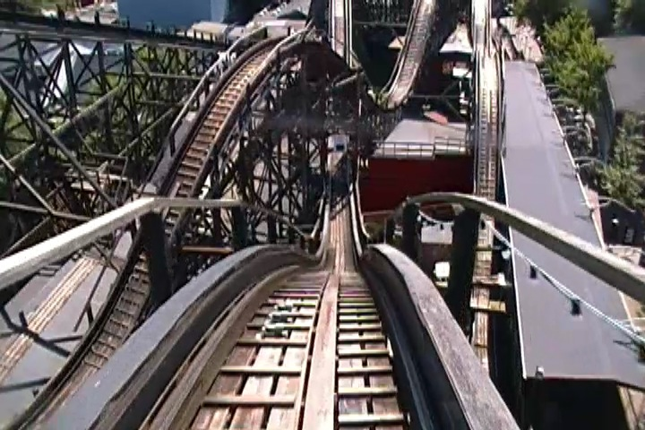
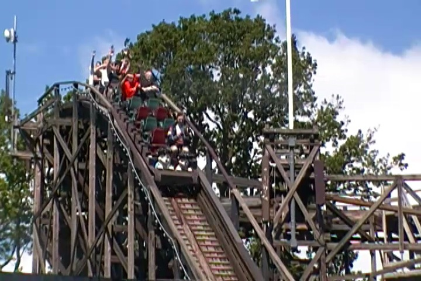
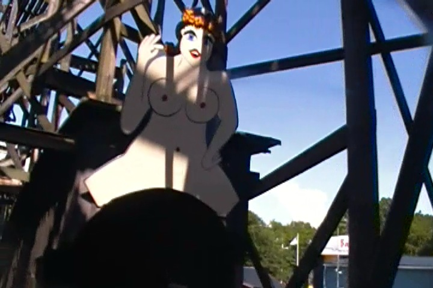
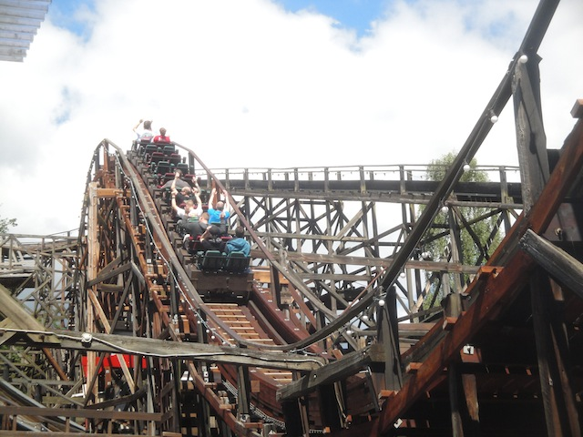
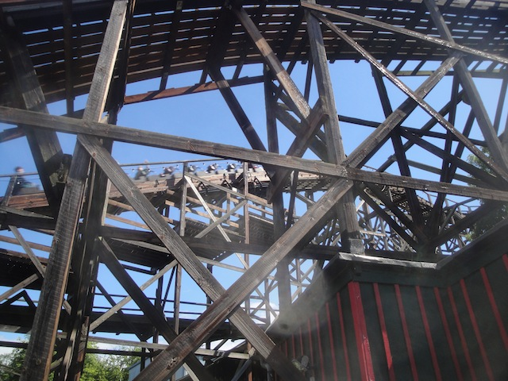
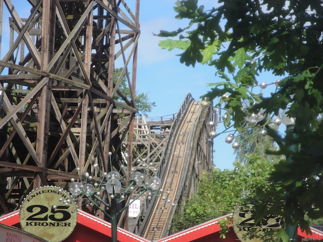

| |
Rutschebanen Review

We're here at Bakken, where we'll be reviewing the parks original coaster that's been around since the 1930s. Rutschebanen. Now this is one of the original Side Friction coasters that's actually still operating to this day. Now granted, it isn't a side friction coaster anymore as they gave the ride new trains with upstop wheels. So there's no more brakeman. And yeah. That's kind of sad. But I'm still glad that the ride still exists. Because while getting rid of the brakeman apparently neutered the ride and made it much more tame, it is still a fun little ride. So yeah. Let's hop in the trains (they may not have a brakeman, but I will admit that they are cute), pull down the lap bar, and we're off. We roll around a big turn and start to climb the lifthill. Fun fact. This lifthill isn't straight. You can't really tell riding it, but looking at it from off ride, you totally see that it isn't straight. But hey. I don't mind. Lifthills don't have to be straight. ;) We then roll around a turn, and...hit some brake runs!!? F*CKING LAME!!! The ride hasn't even really begun yet and we're already stopping. Oh well. We then crawl towards the first drop, and head on down. It's still giving us some good speed. And at the bottom of the first drop, there's a speedometer that tells you how fast you're going. Always a nice touch on a ride. We then rise up a hill, and then go through another turn. I think there's brakes on all the turns because this one slows down, like it has to crawl before it goes down another drop. I'm assuming this is leftover from the days where it still had a brakeman. We then head down the second drop, which is actually a double down. Sadly, there's no great airtime here, though there's still a nice little pop. From what I heard, it used to be much stronger here with a brakeman. We then head over a small little bunny hill. And hey. We get a little bit of airtime here. YAY!!! Not super strong, but I'm still happy with it. We then head up a small hill and go around a turn. This turn gives us some good laterals, but sadly, we hit more brakes so we then we come to another crawl. But hey. We then go around another double down hill. Again, we get a little airtime. YAY!!! We then head over a fun little bunny hop, which gives us some airtime. Fun as always. We then rise up another hill, disobey the right turn only sign and head around another left turn, and of course, we go through some more brakes. But as we go around this turn, we notice something. Something peculiar. What's that we're going through? It looks like...it is!!! It's a naked woman. With her legs spread wide open. And...yes. That's right. This coaster goes straight through a womans vagina. That is the tunnel. Wow. Never in America. I'd love to see something like this. I love that Danes are so open and cool with sexuality that you can just go through a womans vagina and it's like whatever. No big deal. Can we please get that sort of attitude in America please. What more do I need to say other than...TAKE THE PUSSY!!! =) So yeah. We're now in the pussy tunnel and head down a drop. Yay!! We go over a little bunny hop. And of course, there's no airtime here. But honestly, we're in a vagina tunnel. You'll live. We then go around a turn and...we see the light. Oh god!! We're being born again!! Maybe this time you won't screw yourself over like you did the first time you were born. And that is the end of Rutschebanen as we glide into the final brake run and into the station. The coaster itself is fun. Not bad for something that was built in the 1930s. It's far from the best ride ever, but when you consider that this ride used to run with a brakeman. Man. That would've been sweet. And of course, the c*nt tunnel is fun. It's jsut a fun classic wooden coaster. Give it a ride sometime you're out at Bakken.
7/10
Location: Bakken
Opened: 1932
Built by: Valdemar Lebech
Last Ridden: June 14, 2014
Rutschebanen Photos






Home
|